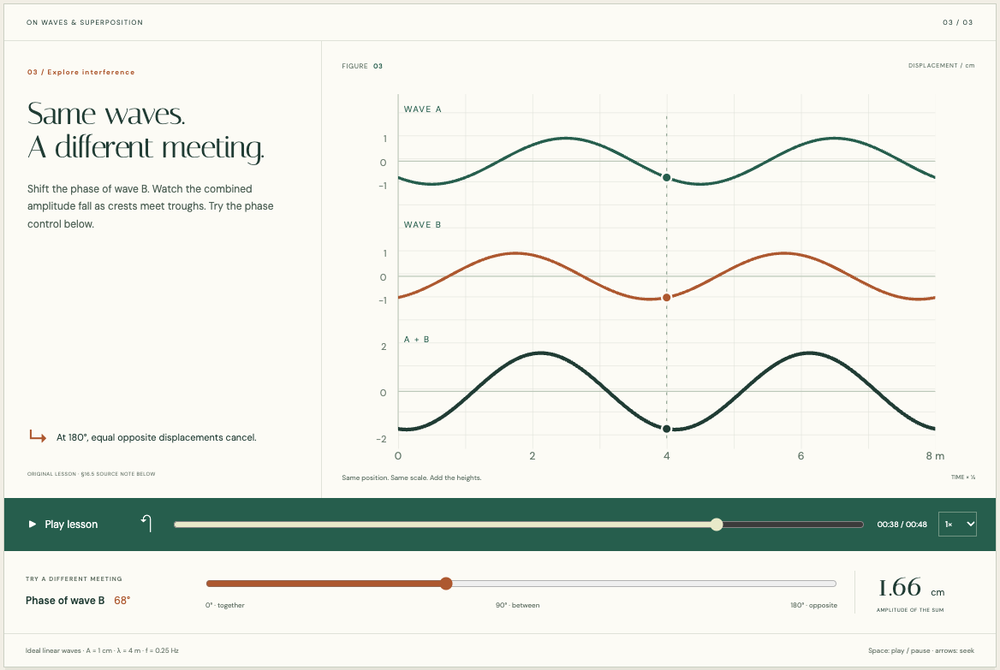
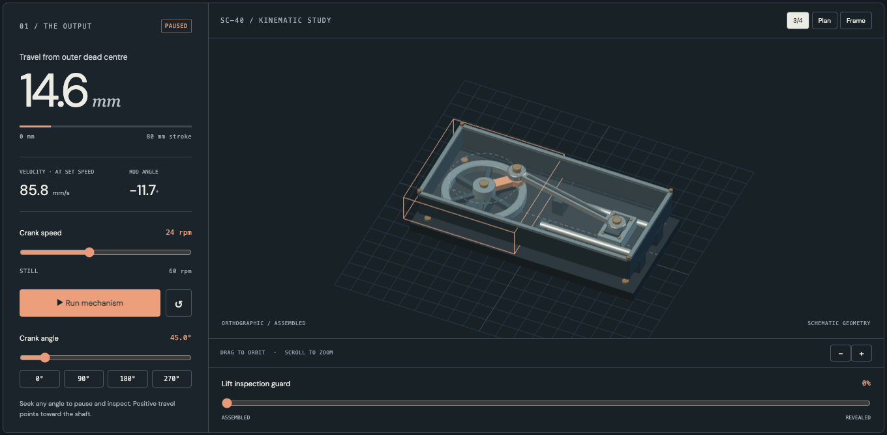
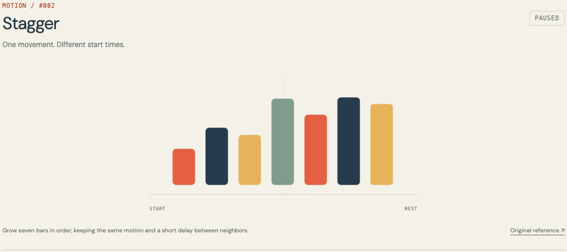
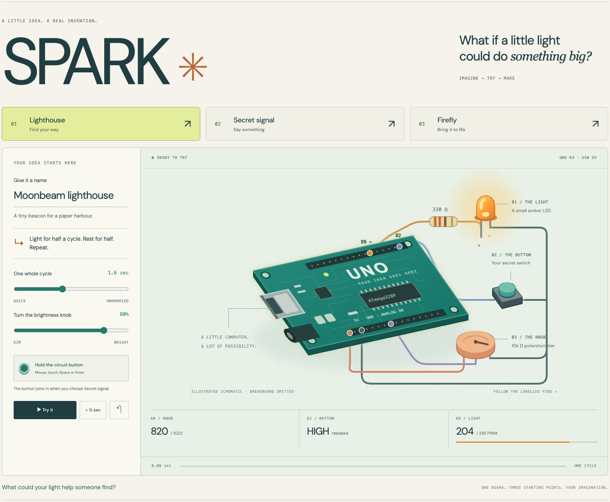

MADE WITH TASTER
SCIENCE · ARDUINO · MACHINES · GAMES · BOOKS · MOTION · DIAGRAMS · VIDEO
01
Lumen
A little world to get lost in
↗
02
DEXTRA
Kinematics
↗
03
Bell Lab
Quantum states
↗
04
Cerebra
Living systems
↗
05
INNERSPACE
Particle physics
↗
06
Workshop
Real CAD
↗
07
SHIFT
A history of AI
↗
08
FOLD
Molecular structure
↗
09
The Taster map
Interactive diagram
↗
10
Taster, in motion
HTML to video
↗

11
LEAF
Interactive book
↗

12
CRANK
Machine kinematics
↗

13
CUE
Motion vocabulary
↗

14
SPARK
Arduino inventions
↗